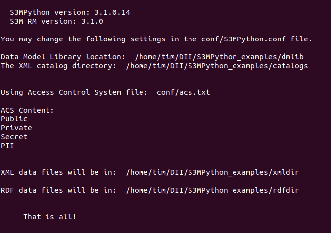

Introduction
S3MPython examples is designed to be an educational introduction to the S3Model solution for cross-domain semantic interoperability.
It uses the Python language implementation of the S3Model Reference Model S3MPython version 3.1.0.15 or later.
Installation
Install or update Anaconda Python. Version 3.7 or later is required.
Download a ZIP file of the latest release and expand it into a directory.
Change into the new directory.
cd S3MPython_examples
Execute the line below in order to setup the requirements for the tutorials.
conda env create -f S3MPyEx.yml
Activate the environment.
conda activate S3MPyEx
Now install S3MPython as if you were installing it into your own project.
Install into your project environment with:
pip install <path/to/release/file>
The <path/to/release/file> is found by going to the Releases page the under the Release you want (usually the latest) go to the Source code link, right click on it and copy the link location.
See the Installation and Project Integration documentation to complete the S3MPython setup.
Once you have completed the the S3MPython setup, execute this line in your terminal:
python3 examples/info.py
You should see displayed information about the installation.
If this works as expected then go to the Tutorials section of this documentation.
If you encounter a problem, please create an Issue. Include your operating system and screenshot or copy/paste of the full traceback.